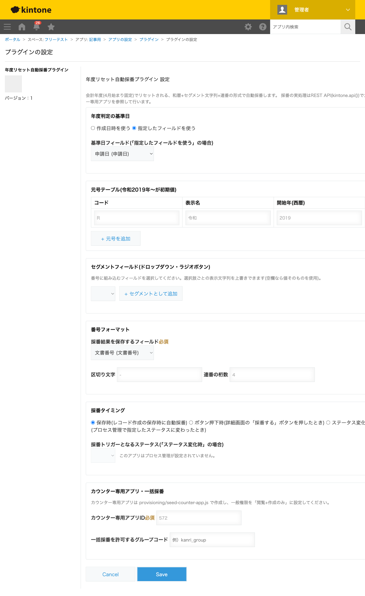
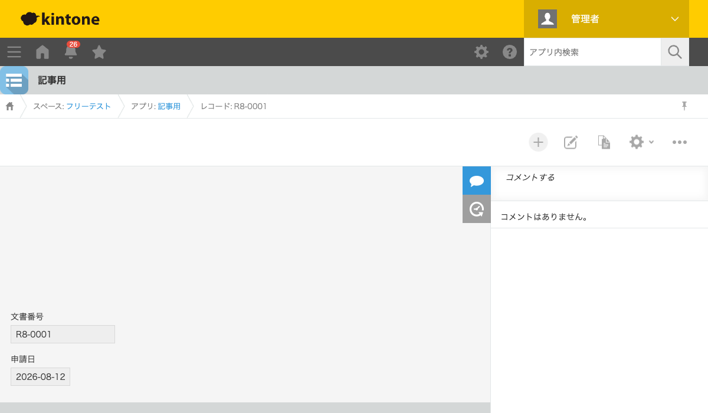

GovAppsプラグイン 安全性を確認できる無料kintoneプラグイン集
契約書番号や申請書番号を「R8-0001」のように会計年度ごとにリセットしながら振りたい、という 要望はよくありますが、kintone標準の「連番」機能には年度リセットの概念がありません。 この記事では、無料プラグインで年度リセット付きの自動採番を実現する方法を、実際に採番した 結果つきで解説します。
kintone標準の「連番」フィールドは、レコード作成のたびに数字が1つずつ増えていくだけで、 「4月になったら1にリセットする」「和暦を組み合わせる」「部署ごとに連番を分ける」といった 制御はできません。連番のリセットや書式のカスタマイズにはJavaScriptカスタマイズが必要になり、 しかも複数のレコードが同時に保存されたときに番号が重複しないようにする排他制御まで考えると、 自作は簡単ではありません。
| 方法 | 向いている場合 | 注意点 |
|---|---|---|
| JavaScriptを自作する | 社内に開発者がいて、独自の採番ルールが必要な場合 | 番号の重複防止(排他制御)の実装が特に難しい。複数人が同時に保存したときの競合を自前で処理する必要がある |
| 有料の他社プラグイン | 予算があり、サポートを重視する場合 | 月額課金が発生する。採番ロジック(重複防止の仕組み)がブラックボックスなことが多い |
| GovAppsプラグイン(このプラグイン) | 無料で、採番の仕組みまで確認してから導入したい場合 | 番号の重複防止用に「カウンター専用アプリ」を1つ用意する必要がある(環境に1つで複数アプリから使い回せる) |
年度リセット自動採番プラグインは無料・広告なし・APIキー不要で、 ソースコードをGitHubで全公開 しています。番号の重複防止は「一意制約フィールドへの違反検知+自動リトライ」という方式で行っており、 このロジック自体もソースを読んで確認できます。外部サーバーへの通信は一切なく、採番処理はすべて ログイン中の自分のkintoneセッションを使うREST APIだけで完結します。
このプラグインは番号の重複を防ぐため「カウンター専用アプリ」というkintoneアプリを1つ必要とします (環境に1つ作れば複数アプリで使い回せます)。対象アプリ側の設定はこの3ステップです。

レコード追加画面で申請日を入力して保存すると、「R8-0001」という番号が文書番号 フィールドに自動的に入力されます。「R8」は令和8年(2026年)を表す元号コード+年、 「0001」が連番です。次に会計年度が変わって令和9年度に入ると、連番は自動的に1からやり直されます。
